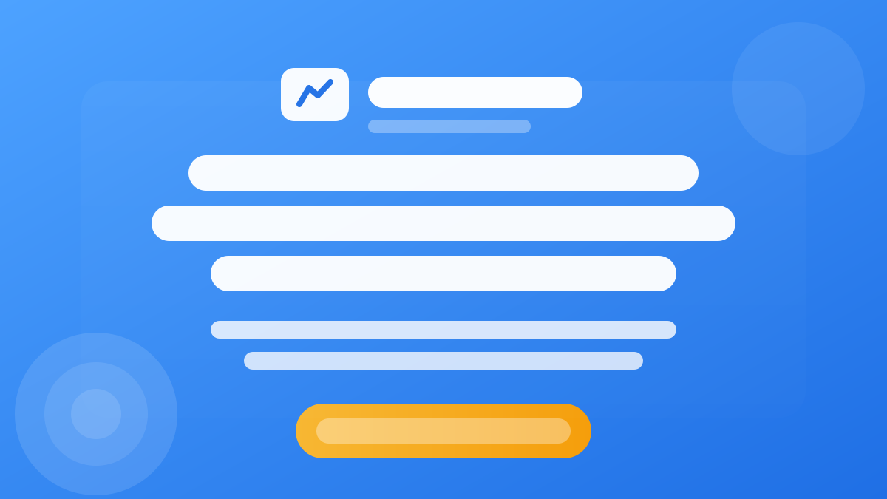
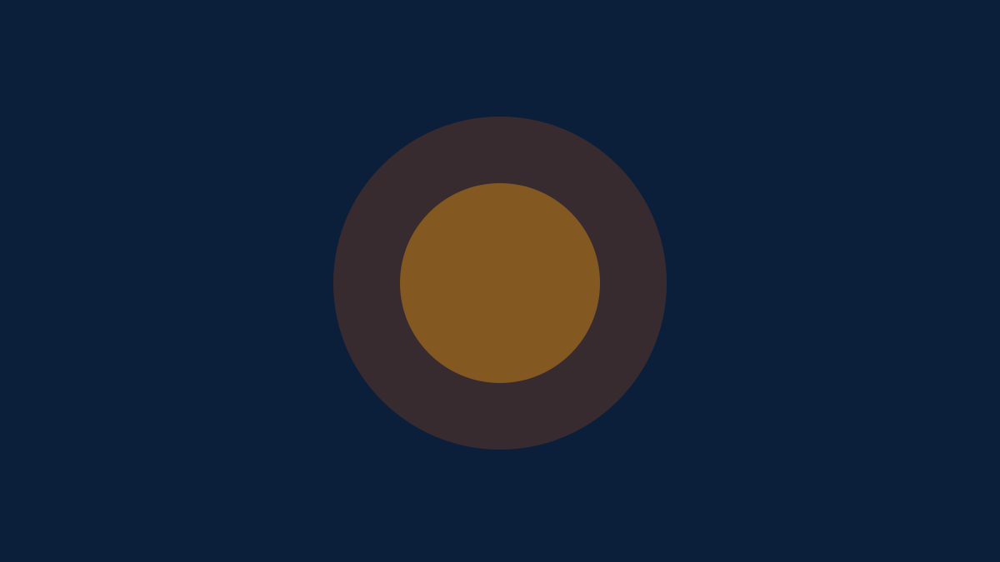

أفضل أدوات الكتابة بالذكاء الاصطناعي
مقارنة عملية بين ChatGPT وJasper وCopy.ai وWritesonic. تعرف على strengths لكل أداة ومهامها المثالية.
استعرض جميع المقالات المنشورة على smartafiliate – مقالات الذكاء الاصطناعي، أدوات AI، التسويق بالعمولة، ومسارات التعلم

مقارنة عملية بين ChatGPT وJasper وCopy.ai وWritesonic. تعرف على strengths لكل أداة ومهامها المثالية.
خطة عملية منظمة لبناء عادة يومية مع الذكاء الاصطناعي، وتنفيذ مشروع رقمي واضح خلال 3 أشهر.
كيف تستخدم AI لتحسين عناوين النشرات، تنظيم المحتوى، وبناء علاقة أفضل مع المشتركين.
كيف تستخدم AI لدعم حضورك الرقمي دون فقدان صوتك الشخصي وأسلوبك المميز.
دليل عملي لدمج الأتمتة مع الذكاء الاصطناعي لتقليل العمل المتكرر وزيادة الكفاءة في المشاريع الرقمية.
تعرف على كيف تُستخدم الأتمتة الذكية في خدمة العملاء والتسويق وصناعة المحتوى وتحليل البيانات.
نظرة عملية على مستقبل الأتمتة الذكية وكيف يمكن لأصحاب المواقع والمشاريع الاستعداد من الآن.

تعرف على مفهوم الأفلييت، كيف تبدأ خطوة بخطوة، وأهم الأخطاء التي يجب تجنبها.

خطوات عملية لتحسين العناوين والوصف الداخلي والروابط وبنية المقال.
كيف تنظم مقالاتك لتحصل على أعلى نسبة نقر على روابط الأفلييت وتحويل الزوار.
تعرف على أكثر 10 أخطاء يرتكبها المبتدئين في الأفلييت وكيف تتجنبها.
تعرف على منصات محلية تدفع بالعملة العربية وتناسب الجمهور الخليجي والمصري.
استخدم الذكاء الاصطناعي لكتابة المحتوى، تحليل البيانات، وتحسين أرباحك.
شرح بسيط لمفهوم الذكاء الاصطناعي، أنواعه، وأمثلة من حياتنا اليومية.
أساسيات بايثون التي تحتاجها فقط للبدء في الذكاء الاصطناعي.
الإحصاء، الجبر الخطي، والاحتمالات – كل ما تحتاجه كمبتدئ.
خطة متكاملة مدتها 6 أشهر لتعلم الذكاء الاصطناعي من الصفر.
قائمة منظمة بأفضل الكورسات المجانية من جامعات عالمية وقنوات عربية.
5 مشاريع كاملة لبناء بورتفوليو قوي لسيرتك الذاتية.
نصائح عملية ستوفر عليك سنوات من التجربة والخطأ.
قائمة منظمة بأفضل الكتب مع روابط للتحميل المجاني إن وُجد.
انضم إلى هذه المجتمعات لطرح الأسئلة والحصول على المساعدة.
مراجعة كاملة لـ ChatGPT: المميزات، العيوب، الخطط السعرية، وكيفية استخدامه بفعالية.
تحليل شامل لأداة Jasper AI المتخصصة في كتابة المحتوى التسويقي.
مراجعة Copy.ai: مميزاتها، عيوبها، وهل تناسب احتياجاتك؟
مراجعة كاملة لأداة Writesonic وميزاتها في كتابة المقالات الطويلة وتحسين SEO.
تعلم استخدام Midjourney لإنشاء صور فائقة الجودة، أفضل الإعدادات، والنصائح العملية.
تعرف على إمكانيات DALL-E 3 من OpenAI وكيفية استخدامه في مشاريعك.
كيف تستخدم ميزات الذكاء الاصطناعي في Canva لإنشاء تصاميم رائعة بسرعة.
تعرف على إمكانيات Llama 3، كيفية تثبيته، واستخدامه في مشاريعك مجاناً.
نموذج لغوي فرنسي متميز مفتوح المصدر. حجم صغير، أداء استثنائي، ومجاني للاستخدام التجاري.
نموذج من معهد TII الإماراتي – دعم ممتاز للغة العربية ومجاني للاستخدام.
أسهل طريقة لتشغيل نماذج Llama و Mistral و Falcon محلياً على جهازك.